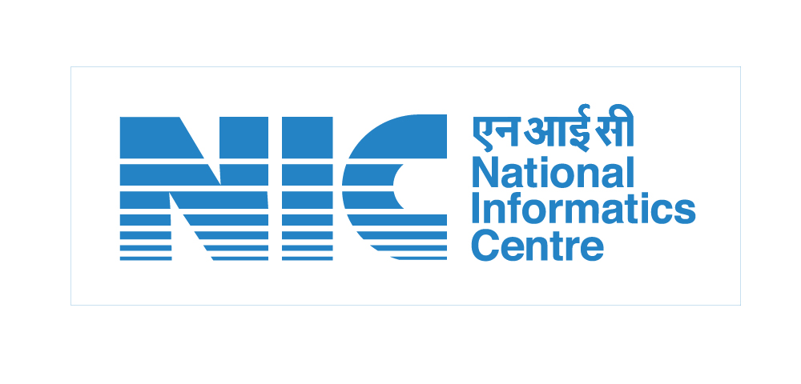

<ion-header [translucent]="true">
  <ion-toolbar color="primary">
    <ion-avatar slot="start">
      
    </ion-avatar>
    <ion-title>
      PHARMACY COUNCIL OF INDIA
    </ion-title>
    <ion-avatar slot="end">
      
    </ion-avatar>
  </ion-toolbar>
</ion-header>


<ion-content class="background-image">
  <ion-grid>
    <ion-row>
      <ion-col size="6">
        <ion-button expand="full" (click)="goToDigitalSignaturePage()">
          <ion-icon name="finger-print"></ion-icon>
          Signature
        </ion-button>
      </ion-col>
      <ion-col size="6">
        <ion-button expand="full">
          <ion-icon name="person-circle"></ion-icon>
          View Feedback ID
        </ion-button>
      </ion-col>
    </ion-row>
  </ion-grid>
</ion-content>
